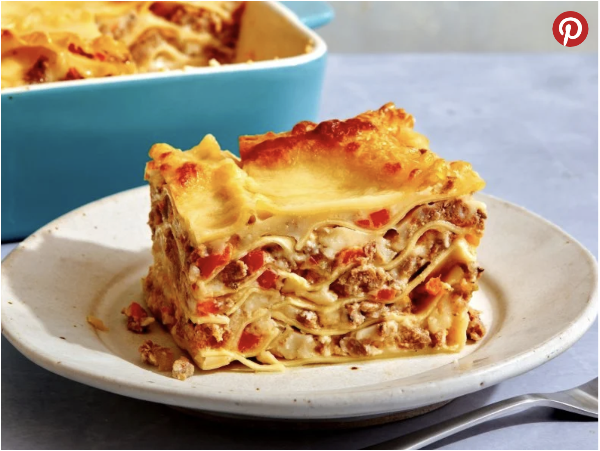

Home
Lasagna

White Lasagna
The best white lasagna has layers of tender noodles, meaty white Bolognese, creamy bechamel and plenty of mozzarella and Parmesan. This recipe has it all. You wont miss the tomatoes we promise! We top it all off with more cheese, then bake until melty and irresistibly golden brown. Serve it alongside a bright, crunchy salad for an impressive, family- friendly meal.
Ingredients
- 2 tablespoons olive oil
- 2 teaspoons chopped fresh thyme
- 4 cloves garlic, thinly sliced
- 2 stalks celery, finely diced
- 1 bay leaf
- 1 medium carrot, finely diced
- 1 medium onion, finely diced
- Kosher salt and freshly ground black pepper
- 1 1/2 pounds mild Italian sausage, casings removed
Steps
- For the white Bolognese: Add the olive oil, thyme, garlic, celery, bay leaf, carrot, onion and a good pinch of salt to a large pot or Dutch oven over medium heat. Cook, stirring occasionally and scraping the bottom of the pot with a wooden spoon, until the vegetables are completely tender and golden, about 15 minutes. (If the vegetables are browning too quickly, lower the heat.)
- Add the sausage and continue to cook, stirring frequently, until the meat is completely broken up and cooked through and most of the liquid has evaporated, about 10 minutes. Add 1 teaspoon salt and several grinds of pepper. Carefully skim the excess fat and oil with a spoon and discard.
- Add the white wine and cook, stirring occasionally, until almost evaporated, 6 to 10 minutes. Add the cream and chicken broth and bring to a boil. Reduce the heat and simmer, stirring occasionally, until the mixture thickens and the flavors come together, 30 to 40 minutes. Discard the bay leaf and add salt and pepper to taste. Keep warm until ready to assemble.